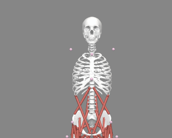
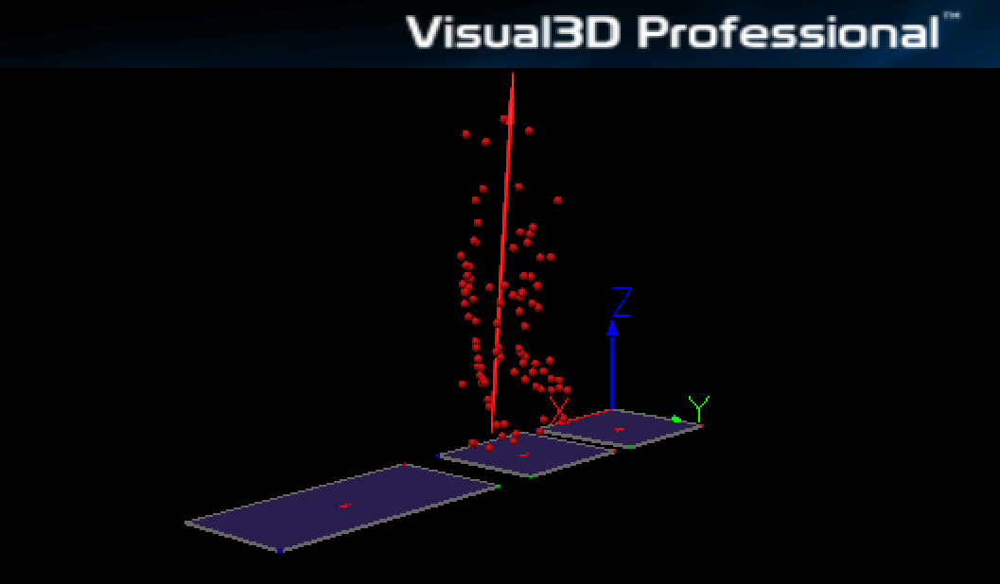

Automated OpenSim Tool
An example workflow showing biomechanical inputs and the output of the tool.

Unscaled generic OpenSim model

Markered data from Visual 3D file
Fully scaled, processed OpenSim Simulation
As part of my PhD research, I have created a tool that combines Python and MATLAB scripts to take Visual3D (.c3d) files and .mat files output from Qualisys to automatically produce a robust OpenSim MoCo simulation. To do this, I modified two already-existing scripts which automated portions of the simlulation to guarantee ISB best-practice guidelines are met for neuromusculoskeletal simulations using the OpenSim API for both Python and MATLAB. I utilized obejctive function minimization algorithms to reduce tracking errors and residual forces/torques, creating a valid, research-grade simulation. This tool reflects months of work, with continued validation and refinement. Unfortunetly, I cannot share the source code yet as I am in the process of publishing it. However, I am always open to discussing the tool!